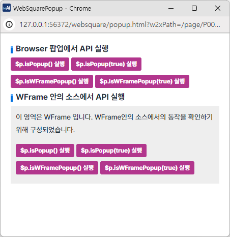
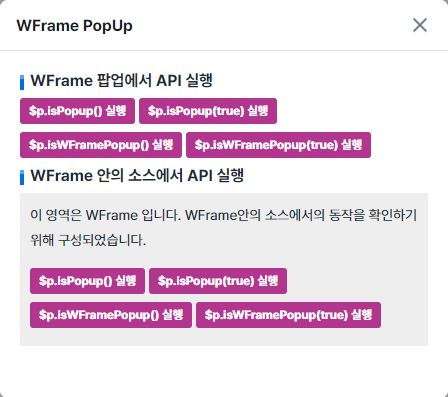

'$p.isPopup' 메소드와 '$p.isWFramePopup' 메소드를 사용하여 현재 화면이 팝업인지를 확인하는 예제입니다. '현재 화면'이란 메소드를 호출하는 스크립트가 작성된 화면을 의미합니다.
'$p.isPopup' 메소드와 '$p.isWFramePopup' 메소드는 팝업의 유형이 'wframePopup' 또는 'browserPopup'인 경우에만 지원됩니다.
팝업이 아닌 화면에서 $p.isPopup, $p.isWFramePopup 실행하기
Browser PopUp 에서 $p.isPopup, $p.isWFramePopup 실행하기
WFrame PopUp 에서 $p.isPopup, $p.isWFramePopup 실행하기
예제의 테스트 방법은 버튼을 클릭하여 결과값을 확인하는 방식으로 구성되었습니다.
1
STEP 1: '$p.openPopup() - browserPopup 실행' 버튼을 클릭합니다.
Browser 팝업이 호출됩니다.
Image 1.브라우저(Chrome) 실행 예시

1
STEP 1: '$p.openPopup() - wframePopup 실행' 버튼을 클릭합니다.
WFrame 팝업이 호출됩니다.
Image 2.브라우저(Chrome) 실행 예시

1
STEP 1: '$p.isPopup() 실행' 버튼을 클릭합니다.
메소드를 호출한 화면이 팝업인지 여부와 예상 실행 결과를 alert합니다.
2
STEP 2: '$p.isPopup(true) 실행' 버튼을 클릭합니다.
메소드를 호출한 화면이 팝업에 속한 화면인지 여부와 예상 실행 결과를 alert합니다.
3
STEP 3: '$p.isWFramePopup() 실행' 버튼을 클릭합니다.
메소드를 호출한 화면이 WFrame 팝업인지 여부와 예상 실행 결과를 alert합니다.
4
STEP 4: '$p.isWFramePopup(true) 실행' 버튼을 클릭합니다.
메소드를 호출한 화면이 WFrame 팝업에 속한 화면인지 여부와 예상 실행 결과를 alert합니다.
Example 1.Script
//case 1 //이 스크립트를 호출한 화면이 팝업인지의 여부를 반환합니다. var ispopup = $p.isPopup(); //case 2 //이 스크립트를 호출한 화면이 팝업에 속한 화면인지 여부를 반환합니다. var ispopup = $p.isPopup(true);
Example 2.Script
//case 1 //이 스크립트를 호출한 화면이 WFrame 팝업인지의 여부를 반환합니다. var ispopup = $p.isWFramePopup(); //case 2 //이 스크립트를 호출한 화면이 WFrame 팝업에 속한 화면인지 여부를 반환합니다. var ispopup = $p.isWFramePopup(true);
$p.isPopup( closest )
$p.isWFramePopup( closest )